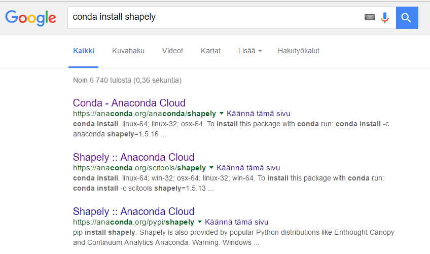
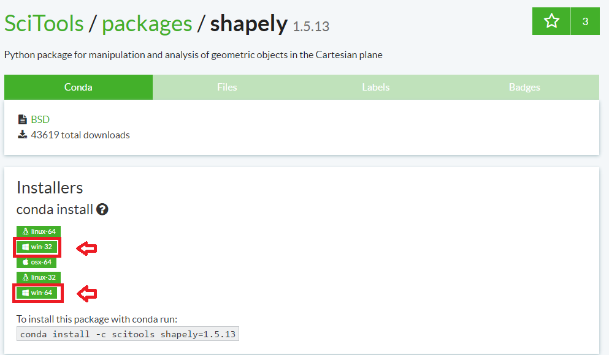
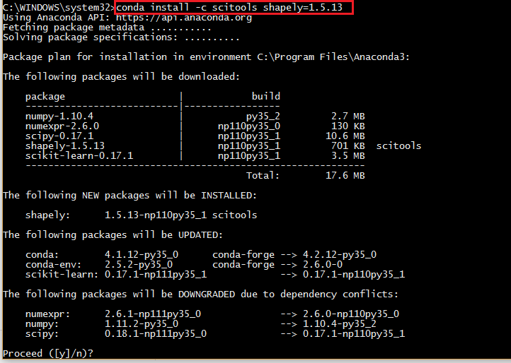

Installing Python¶
It is possible to do programming with Python on your own computer, but first you need to install Python. The purpose of this page is to help you to install Python and different Python packages into your own computer. Even though it is possible to install Python from their homepage, we highly recommend using Anaconda which is an open source distribution of the Python and R programming languages for large-scale data processing, predictive analytics, and scientific computing, that aims to simplify package management and deployment. In short, it makes life much easier when installing new tools to your Python.
Install Python on Windows¶
For people working with computers from University of Helsinki: Anaconda should be available from Helsinki Software Center.
Following steps have been tested to work on Windows 7 and 10 with Anaconda3 version 5.2.0 (June 2018) that installs Python 3.6 and various useful packages.
Download Anaconda installer (64 bit) for Windows.
Install Anaconda to your computer by double clicking the installer and install it into a directory you want (needs admin rights). Install it to all users and use default settings.
Note
Note for University of Helsinki workers: you need to set the installation location as C:\HYapp so that it can be used easily by anyone without the need to
pass admin credentials all the time. If you don’t have C:\HYapp -folder, create one with admin rights.
Test that the Anaconda´s package manage called conda works by
opening a command prompt as a admin user
and running command conda --version. If the command returns a version number of conda (e.g. conda 4.5.9) everything is working correctly.
Install Python on macOS¶
There is now a convenient graphical installer that can be used to install Anaconda for Mac. For the IntroQG people, we recommend you install Anaconda 4.4.0 by visiting the Anaconda downloads page and clicking on the button to install the latest Python 3 version of Anaconda, as shown below.
Note
For the AutoGIS people, we recommend that you install a slightly older version of Anaconda for Mac (version 4.2.0). You can download that version using this link to the Anaconda software repository.
{kind=link}
Anaconda installation for the IntroQG students
Install Python on Linux¶
The following have been tested on Ubuntu 16.04. Might work also on Mac (not tested yet).
Install Anaconda 3 and add it to system path
Installing packages using Conda¶
Conda has an excellent online user guide which covers most of the basic things, such as installing new packages.
The easiest way¶
You can install new packages using the conda install command in a terminal of an Anaconda Prompt (as admin).
conda install [packagename]
You can first check which packages you have installed using the conda list command.
It’s a good idea to search for installation instructions for each package online.
Installing Jupyter Lab using conda¶
If you want to use Jupyter Lab on your own computer, you can install it using conda (or pip). First, have a quick look at the Jupyter Lab installation instructions: https://jupyterlab.readthedocs.io/en/stable/getting_started/installation.html
According to the instructions, you can run:
`
conda install -c conda-forge jupyterlab
`
After installation is completed, you can start a Jupyter Lab instance by running this command:
Jupyter Lab should open up in a browser window.
Alternative way to install packages if typical doesn’t work¶
In most cases using conda install is the best approach, but sometimes you get errors when trying to install a package.
Here is an example when trying to install a module called shapely:
In this case conda was not able to find the shapely module from the default channel it uses for downloading the module. Conda downloads packages from different remote channels, and it is often good idea to download all packages from the same channel in order to avoid conflicts with versions.
If conda install command was not able to install the package you were interested in there is an alternative way to do it by taking advantage of different conda distribution channels that
are maintained by programmers themselves. An easy way to find the right command to install a package from these alternative conda distribution channels is to Google it.
Let’s find our way to install the Shapely module by typing following query to Google:
Here, we can see that we have different pages showing how to install Shapely using conda package manager.
Which one of them is the correct one to use?
We need to check the operating system banners and if you find a logo of the operating system of your computer, that is the one to use! Thus, in our case the first page that Google gives does not work in Windows but the second one does, as it has Windows logo on it:
From here we can get the correct installation command for conda and it works!
You can follow these steps similarly for all of the other Python modules that you are interested to install.